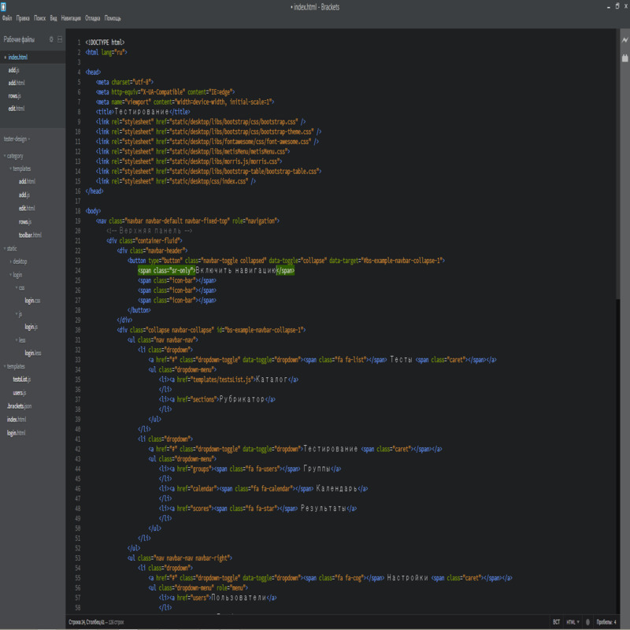
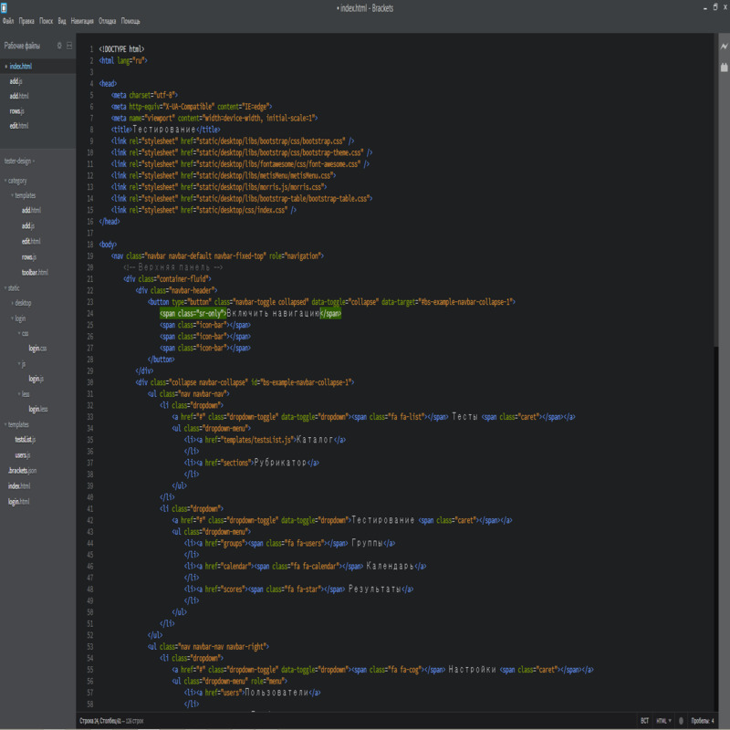
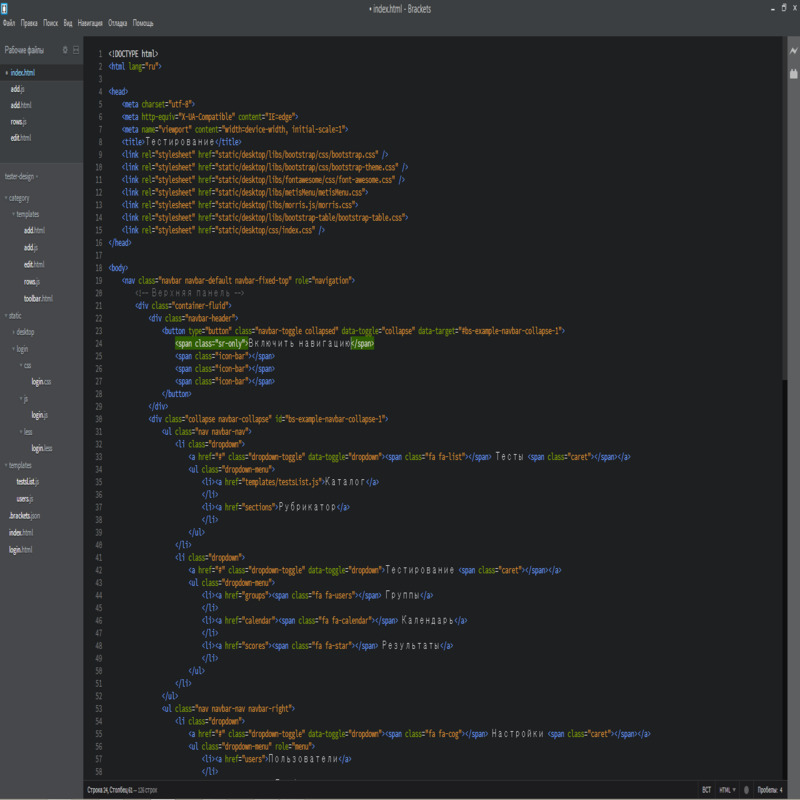
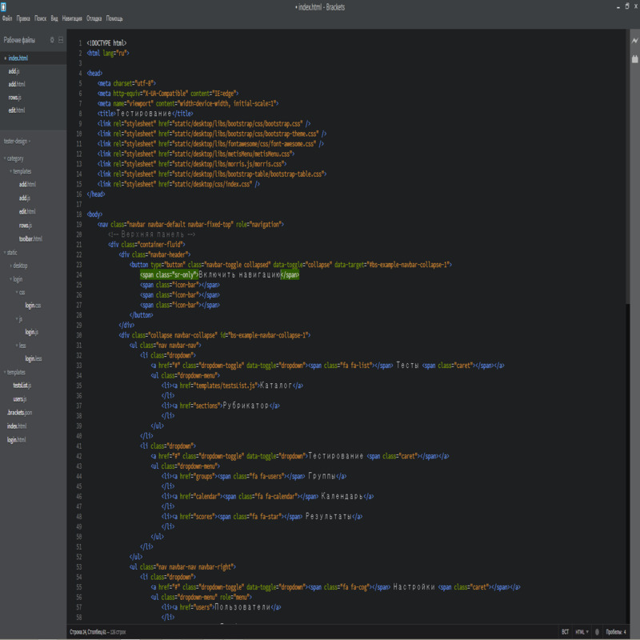

Brackets — свободный текстовый редактор для веб-разработчиков. Brackets ориентирован на работу с HTML, CSS и JavaScript. Эти же технологии лежат в основе самого редактора, что обеспечивает его кроссплатформенность, то есть совместимость с операционными системами Mac, Windows и Linux. Brackets создан и развивается Adobe Systems под лицензией MIT License и поддерживается на GitHub. На сегодняшний день сообществом создано множество расширений, добавляющих большинство необходимых инструментов для работы над кодом, таких как система контроля версий Git, просмотр HTML-кода в браузере в реальном времени (Live Preview), синхронизация с FTP (Git-FTP)[2]. Принять участие в разработке и поддержке расширений может любой желающий.